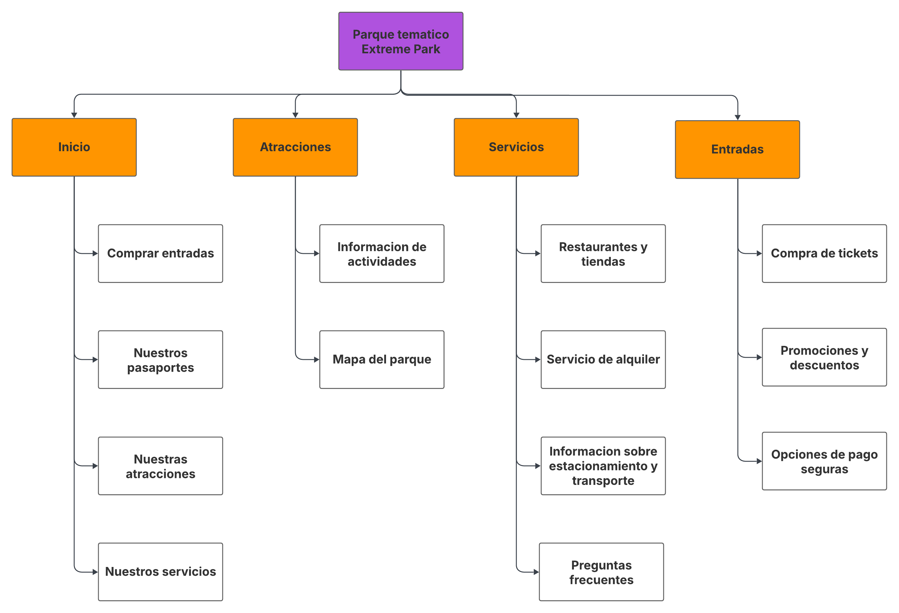

Propuesta del proyecto
Actividad principal
Parque temático inspirado en la película Madagascar, ofreciendo experiencias inmersivas, atracciones, espectáculos y actividades para todas las edades.
Objetivos del sitio web
Informar sobre el parque, mostrar atracciones, horarios, precios, ubicación, novedades y permitir la compra de entradas online.
Concepto general y estrategias
Experiencia lúdica y educativa basada en los personajes y escenarios de Madagascar, con eventos temáticos, merchandising exclusivo y actividades interactivas para familias y escuelas.
Público objetivo
Familias con niños de 4 a 14 años, fanáticos de la película, escuelas, turistas y público general interesado en parques de diversiones y actividades recreativas.
Identidad visual
Naranja
Violeta
Logo del parque temático
El logo de Extreme Park representa la energía, diversión y aventura inspiradas en la película Madagascar. Sus colores vibrantes y formas dinámicas transmiten la esencia lúdica del parque, invitando a familias y fanáticos a vivir una experiencia inolvidable.
Mapa del sitio
Prototipo de Figma
Ver Wireframe en FigmaOrganización del equipo
- Jesús Espinoza: Diseñador UX/UI
- Facundo Tassone: Maquetador Frontend
- Martín Iglesias: Programador Frontend
- Santiago Conti: Programador Frontend